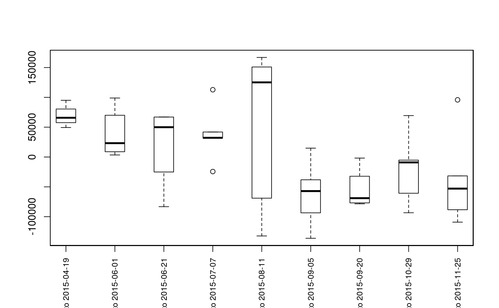

Returns a matrix of distance with direction by unique fish between sequential surveys. The mouth (lowest point) segment and vertex must be specified (see setmouth). A plotting method is provided for the output; see plotseq.
upstreamseq(unique, survey, seg, vert, rivers, logical = NULL, flowconnected = FALSE, net = FALSE, stopiferror = TRUE, algorithm = NULL)
| unique | A vector of identifiers for each fish. |
|---|---|
| survey | A vector of identifiers for each survey. It is recommended to use a numeric or date format (see as.Date) to preserve survey order. |
| seg | A vector of river locations (segment component). |
| vert | A vector of river locations (vertex component). |
| rivers | The river network object to use. |
| logical | A boolean vector that can be used for subsetting - if used,
|
| flowconnected | If |
| net | Whether to calculate net upstream distance (net=TRUE) or total distance (net=FALSE, default). |
| stopiferror | Whether or not to exit with an error if a route cannot be
found. If this is set to |
| algorithm | Which route detection algorithm to use ( |
A data frame of upstream distances (numeric), with rows defined by unique fish and columns defined by observation increment (1 to 2, 2 to 3, etc.) See upstream for additional information.
Returns either net upstream distance (net=TRUE) or total distance (net=FALSE, default). See upstream.
Building routes from the river mouth to each river network segment and/or distance lookup tables will greatly reduce computation time (see buildsegroutes).
data(Gulk, fakefish) # Mouth must be specified Gulk$mouth$mouth.seg <- 1 Gulk$mouth$mouth.vert <- 1 upstreamseq(unique=fakefish$fish.id, survey=fakefish$flight, seg=fakefish$seg, vert=fakefish$vert, rivers=Gulk)#> 1 to 2 2 to 3 3 to 4 4 to 5 5 to 6 6 to 7 7 to 8 #> 1 95083.92 NA NA 31716.70 NA NA NA #> 3 NA 98874.073 NA NA 161737.19 -136260.65 -78484.316 #> 4 NA 8851.529 NA NA -14155.61 14839.50 NA #> 6 NA NA NA NA NA -62068.00 NA #> 7 65807.27 12711.061 66917.81 -24371.74 NA NA NA #> 8 NA NA NA NA NA NA -62652.317 #> 9 49426.77 33738.885 -83233.47 NA NA NA NA #> 10 NA NA NA 32212.19 NA NA NA #> 11 NA NA NA NA NA NA NA #> 13 NA NA NA 112786.74 166903.42 -52140.91 NA #> 14 NA NA 33037.94 41936.11 -132315.85 -93566.45 NA #> 15 NA 70005.435 NA NA -123847.49 NA NA #> 16 NA NA NA NA NA NA -1777.165 #> 17 NA NA NA NA 140074.17 NA NA #> 18 NA 3419.247 67104.32 NA NA NA NA #> 19 NA NA NA NA NA NA NA #> 20 NA NA NA NA 125131.75 -38174.45 -75305.374 #> 8 to 9 9 to 10 #> 1 -54220.046 -36142.97 #> 3 -3810.189 -88381.02 #> 4 NA NA #> 6 NA NA #> 7 NA NA #> 8 -9037.607 -31666.38 #> 9 NA NA #> 10 -6621.268 NA #> 11 -93415.847 95830.80 #> 13 NA NA #> 14 NA -69776.53 #> 15 NA NA #> 16 69473.303 -109142.02 #> 17 NA NA #> 18 NA NA #> 19 -67213.962 NA #> 20 NA NAseqbysurvey <- upstreamseq(unique=fakefish$fish.id, survey=fakefish$flight.date, seg=fakefish$seg, vert=fakefish$vert, rivers=Gulk) seqbysurvey#> 2015-04-01 to 2015-04-19 2015-04-19 to 2015-06-01 2015-06-01 to 2015-06-21 #> 1 95083.92 NA NA #> 3 NA 98874.073 NA #> 4 NA 8851.529 NA #> 6 NA NA NA #> 7 65807.27 12711.061 66917.81 #> 8 NA NA NA #> 9 49426.77 33738.885 -83233.47 #> 10 NA NA NA #> 11 NA NA NA #> 13 NA NA NA #> 14 NA NA 33037.94 #> 15 NA 70005.435 NA #> 16 NA NA NA #> 17 NA NA NA #> 18 NA 3419.247 67104.32 #> 19 NA NA NA #> 20 NA NA NA #> 2015-06-21 to 2015-07-07 2015-07-07 to 2015-08-11 2015-08-11 to 2015-09-05 #> 1 31716.70 NA NA #> 3 NA 161737.19 -136260.65 #> 4 NA -14155.61 14839.50 #> 6 NA NA -62068.00 #> 7 -24371.74 NA NA #> 8 NA NA NA #> 9 NA NA NA #> 10 32212.19 NA NA #> 11 NA NA NA #> 13 112786.74 166903.42 -52140.91 #> 14 41936.11 -132315.85 -93566.45 #> 15 NA -123847.49 NA #> 16 NA NA NA #> 17 NA 140074.17 NA #> 18 NA NA NA #> 19 NA NA NA #> 20 NA 125131.75 -38174.45 #> 2015-09-05 to 2015-09-20 2015-09-20 to 2015-10-29 2015-10-29 to 2015-11-25 #> 1 NA -54220.046 -36142.97 #> 3 -78484.316 -3810.189 -88381.02 #> 4 NA NA NA #> 6 NA NA NA #> 7 NA NA NA #> 8 -62652.317 -9037.607 -31666.38 #> 9 NA NA NA #> 10 NA -6621.268 NA #> 11 NA -93415.847 95830.80 #> 13 NA NA NA #> 14 NA NA -69776.53 #> 15 NA NA NA #> 16 -1777.165 69473.303 -109142.02 #> 17 NA NA NA #> 18 NA NA NA #> 19 NA -67213.962 NA #> 20 -75305.374 NA NAplotseq(seqbysurvey)